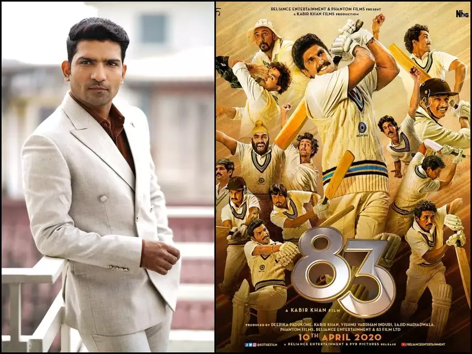
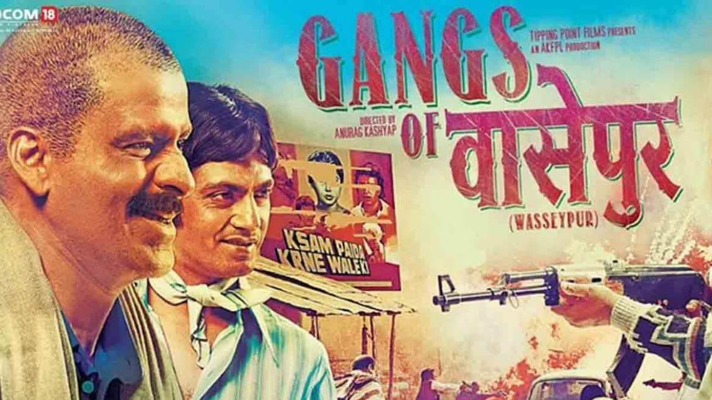

83

83 is an upcoming Indian sports drama film
directed by Kabir Khan and jointly produced
by Khan, Vishnu Vardhan Induri, Deepika
Padukone and Sajid Nadiadwala.[2] Co-distributed
by Reliance Entertainment,[3] the film stars
Ranveer Singh as cricketer Kapil Dev, along with
Deepika Padukone, Tahir Raj Bhasin, Saqib Saleem,
Harrdy Sandhu, Ammy Virk, Jiiva, Pankaj Tripathi
,Boman Irani, Nishant Dahiya, Sahil Khattar and
Amrita Puri.In September 2017, Reliance Entertainment
and Vibri Media hosted an event to announce the film
with the team that had won the 1983 World Cup. The
shooting began on 5 June 2019 in England.[4] Although
it was scheduled for theatrical release on 10 April
2020, the release has been postponed due to COVID-19
pandemic.[5]
Gangs of Wasseypur

Gangs of Wasseypur (stylised as Gangs of वासेपुर)
is a 2012 Indian two-part crime film, produced
and directed by Anurag Kashyap,[2] and written
by Kashyap and Zeishan Quadri. Centered on the
coal mafia (Mafia Raj) of Dhanbad, and the
underlying power struggles, politics and
vengeance between three crime families, the
film features an ensemble cast, with Manoj Bajpai,
Nawazuddin Siddiqui, Richa Chadda, Huma Qureshi
and Tigmanshu Dhulia in the major roles. Its story
spans from 1941 to 2009. Both parts were originally
shot as a single film measuring a total of 321 minutes
and screened at the 2012 Cannes Directors' Fortnight
,[3][4][5][6] but, since no Indian theatre would
volunteer to screen a more-than-five-hour film, it
was divided into two parts for the Indian market.